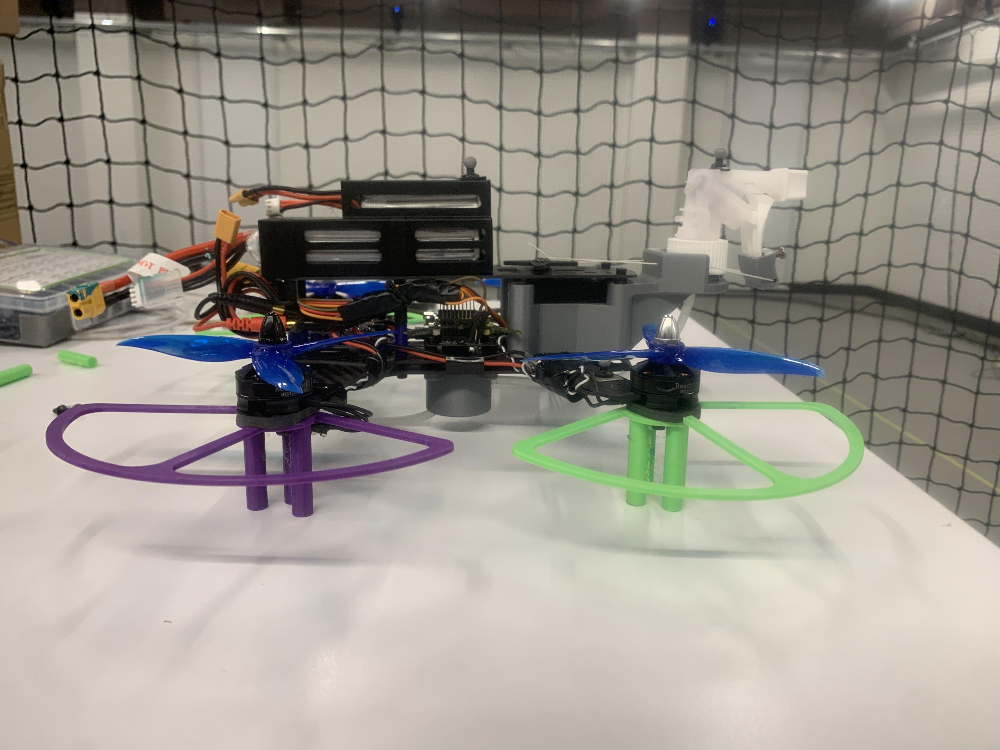

Additional Project
Drone Painting
Explored programming a drone to paint pictures, combining lightweight structure, controlled motion, and process constraints for automated paint application.
Overview
This project focused on programming a drone to paint pictures by translating a fabrication process into a mobile robotic system. The work centered on payload tradeoffs, motion control, and how to maintain a useful paint process window while keeping the platform simple enough to prototype.
What I Built
- Concept layouts for a drone-mounted system intended to paint images
- Early thinking around motion programming, process repeatability, and payload constraints
- Prototype-level structure for testing automated painting ideas
Images


